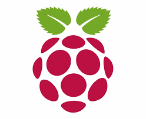

Done!
{{ markers.length }} / {{ maxMarkers < searchResults.length ? maxMarkers : searchResults.length }}
×
TapiocaPi
TapiocaPi
A simple ZIP/address searcher SPA powered by Node.js/Vue.js/Bootstrap.
Result of: {{ lastQuery }}
Found
{{ searchResults.length }}
the number of the addresses found
Currently showed
{{ addrs.length }}
the number of the currently showed addresses
{{ mapBtnDesc }}
{{ markerBtnDesc }}
Loading...
List of the addresses
#
〒郵便番号
都道府県
市区町村
町域
カナ
{{ index + 1 }}
{{ addr.zip }}
{{ addr.addr1 }}
{{ addr.addr2 }}
{{ addr.addr3 }}
{{ [addr.kana1, addr.kana2, addr.kana3].join(" ") }}